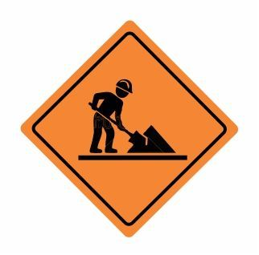

Patatec

En Patatec creemos que aprender tecnología no debería ser complicado. Por eso hemos creado una academia de formación pensada para personas que quieren iniciarse en el mundo de la programación, el diseño web y las nuevas tecnologías de una manera práctica, sencilla y adaptada a su ritmo.
Nuestro objetivo es ayudarte a convertir tus ideas en proyectos reales, independientemente de que estés dando tus primeros pasos en el mundo digital o quieras ampliar los conocimientos que ya tienes.
(Tan solo asegúrate de que los profesores no te pillan viendo nada que no debas fuera de casa... Guarro)
Ofrecemos cursos diseñados para distintos niveles de experiencia. Desde nuestros cursos de HTML y CSS, pensados para quienes nunca han creado una página web, hasta cursos más avanzados de JavaScript, Python y desarrollo web.
Nuestros contenidos combinan explicaciones teóricas con ejercicios prácticos para que puedas aplicar desde el primer momento lo que estás aprendiendo.
(No nos hacemos responsables si nuestros métodos no te sirven a tí especificamente)
Nuestros cursos están diseñados para que puedas organizar tu aprendizaje según tu disponibilidad y avanzar paso a paso.
(Los cursos no duran más de 3 meses, si no te da tiempo a terminar, mala suerte)
Creemos que la mejor forma de aprender a programar es programando. Por eso nuestros cursos incluyen ejercicios y pequeños proyectos.
(Huelga decir que Patatec tiene la propiedad absoluta de todo lo que programes, no vas a ver un duro)

No necesitas ser un experto para empezar. Tenemos formación para principiantes y también contenidos para quienes ya tienen experiencia.
(Tampoco esperamos que te enteres de nada de todas formas)
Nuestro equipo está formado por profesionales del sector que conocen las herramientas y tecnologías utilizadas actualmente.
(Tendrás suerte si aparecen, más todavía si están sobrios, si ya de paso te corrigen, vete comprando un boleto de lotería)
La tecnología está presente en prácticamente todos los ámbitos de nuestra vida y cada vez son más las empresas que necesitan profesionales con conocimientos digitales.
En Patatec queremos ayudarte a adquirir habilidades que puedas utilizar tanto en tus propios proyectos como en tu futuro profesional.
Ya sea que quieras crear tu primera página web, desarrollar una aplicación, aprender un nuevo lenguaje de programación o simplemente descubrir si el mundo de la tecnología es para ti, aquí encontrarás un punto de partida.
(Con algo de suerte tirarás la toalla la primera semana y podremos revenderle tu plaza a otro pringado ¿Hemos mencionado ya que teneís que pagar por adelantado?)
Imagina una página web que llevabas tiempo queriendo crear. Una aplicación para resolver un problema cotidiano. Una idea para un proyecto personal.
En Patatec te proporcionamos los conocimientos y las herramientas necesarias para dar los primeros pasos y transformar tus ideas en proyectos reales.
(Aquí ya no hay ningun chiste, no te va a contratar ni dios)
Consulta nuestros cursos y encuentra la formación que mejor se adapte a ti.
Además de nuestra formación online, contamos con un espacio dedicado al aprendizaje donde nuestros alumnos pueden asistir a clases, resolver dudas y trabajar en sus proyectos.
Puedes encontrarnos en Atxuri Kalea, 21, Bilbao, donde estaremos encantados de recibirte.
Horario de atención:
Lunes a viernes · 9:00 - 18:00